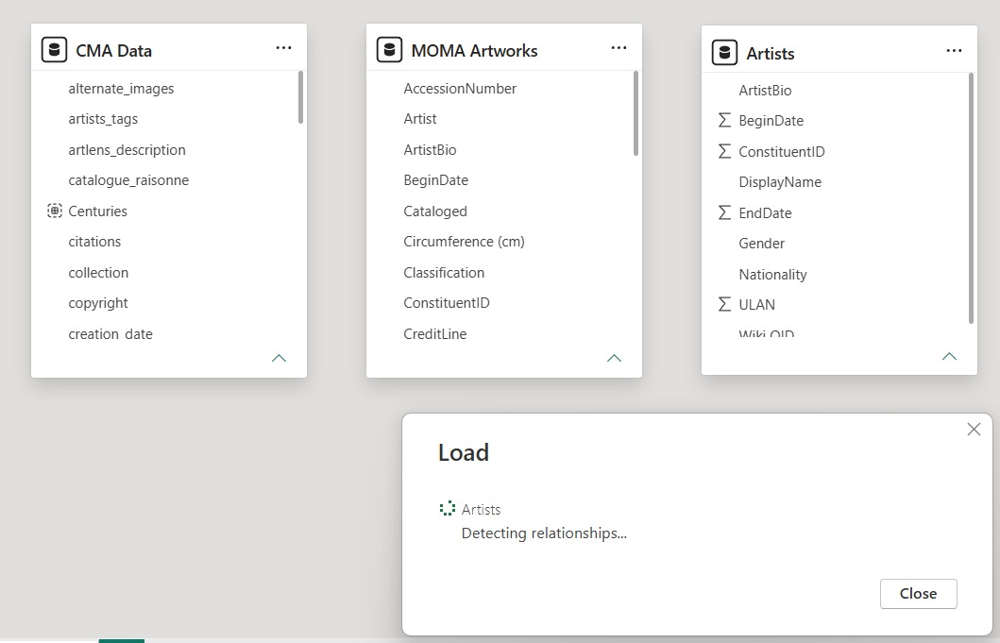
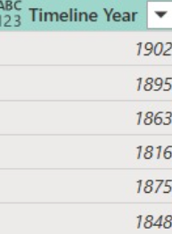

Week 3 Internship Report
First Week (Sunday - Thursday)
Sunday: I first reviewed the resources and dataset links provided by Christophe to understand the available museum collection datasets. I then explored several projects featured on WCMA, particularly the Pink Art project, and saw how students visualized and presented data in an interactive way. After getting inspiration from these examples, I decided to continue using Power BI for this week's work while also keeping in mind the feedback Mr. Christophe provided during Week 1. To begin the analysis, I selected the Cleveland Museum of Art dataset, as it was the most recently added and active dataset available for the project.
Monday: I decided to add Museum of Modern Art, right after that I cleaned both CMA and MoMA datasets to address inconsistencies in the data and make them suitable for comparison. I began to analyse both collections and observed several differences. CMA appears to have stronger representation from artists originating from the same countries or regions, whereas MoMA includes a broader range of nationalities. CMA also contains a larger number of artists overall, while MoMA's collection is comparatively smaller. In terms of artistic techniques, both museums show strong use of gelatin silver prints and lithographs, although the remaining techniques vary considerably between the two collections.

Tuesday: I added Tate Gallery and The Metropolitan Museum of Art to the comparison and found that their datasets were much cleaner, with fewer data quality issues than CMA and MoMA. I then focused on creating timeline visualizations, which required additional data cleaning for CMA and MoMA because their date fields contained BCE/CE dates, date ranges, and text-based entries. For CMA, I used the earliest and latest creation dates to generate a single timeline year and grouped artworks into broader periods to make the visualizations easier to read. For MoMA, I created a Power Query formula to automatically extract valid years from inconsistent date formats and convert BCE dates into negative values. This allowed artworks from different historical periods to be displayed on a single chronological timeline without manually cleaning thousands of records. The resulting timeline visualizations made it much easier to compare how the collections are distributed across different time periods.

Wednesday: I expanded the analysis by exploring and adding more focus on the collections, including the most represented departments and artists across the four museums. After building these visualizations and comparisons, I moved on to analyzing the overall findings from the data. These findings helped provide a clearer picture of how each museum differs in terms of collection scope and focus.
Findings:
PowerBI Collection Link
CMA appears to have the widest geographic distribution, with strong representation across Asia, Africa, Europe, and the Americas. While, MoMA and the Met show denser concentrations in Europe and North America, reflecting their stronger focus on modern Western art. Tate also demonstrates broad international coverage, having focus on Europe, America, and some parts of Asia.

Across all four museums, printmaking and paper-based techniques appear among the most common artistic methods. CMA and MoMA are dominated by gelatin silver prints, lithographs, and etchings, while the Met shows a stronger presence of materials such as terracotta and silk. Tate differs from the others, with graphite on paper being by far the most common medium, highlighting its large collection of drawings and works on paper. These differences suggest that each museum's collection reflects distinct collecting priorities and areas of specialization.

CMA is led by artists such as Edward S. Curtis, while Tate is represented by J. M. W. Turner. MoMA and the Met also contain many works attributed to unidentified, anonymous, or commercial creators, highlighting the diversity of contributors represented in their collections. Overall, the results suggest that each museum's collection reflects its unique collecting priorities and historical focus.

The collections show some clear differences in what each museum focuses on collecting. CMA and the Met have large numbers of prints, photographs, and drawings, while MoMA is heavily focused on photographs, prints, and design-related works. CMA also stands out for its strong representation of Asian, medieval, and decorative arts departments, reflecting its broader encyclopedic collection. Overall, the collections reveal different priorities, with some museums focusing on specific art forms while others aim to represent a wider range of cultures and object types.

Overall, prints, drawings, and photography are widely dominated on each museum shown. However, CMA has a much wider spread across departments such as Asian, Medieval, Egyptian, and Decorative Arts, reflecting its broader encyclopedic collection. In contrast, both MoMA and the Met are heavily dominated by Drawings & Prints, with Photography and Architecture & Design also making up significant portions of their collections. This suggests that while MoMA and the Met are more focused on particular collection areas, CMA aims to represent a wider range of cultures, historical periods, and artistic traditions.

The timeline shows that all four museums are most heavily represented by works from the 18th to 20th centuries, with the highest concentrations occurring in the 19th and 20th centuries. CMA has the broadest historical range, extending far into the BCE period, while MoMA, the Met, and Tate are much more concentrated on modern and contemporary works. Tate's collection is particularly centered around the late 18th and early 19th centuries, whereas MoMA peaks in the 20th century, reflecting its focus on modern art.

All four museums continue to acquire works, but their collections appear to have expanded most rapidly during a handful of significant periods. CMA shows relatively consistent acquisition activity across the 20th and 21st centuries, while MoMA experiences several noticeable spikes, particularly during the mid-1900s. The Met and Tate also displayed even larger peaks in specific years.
Conclusion:
Comparing the four museum datasets shows that each institution has a distinct collecting focus despite sharing some common trends. Prints, drawings, and photography appear prominently across most collections, while CMA stands out for its broader representation of different cultures and historical periods through departments such as Asian, Medieval, Egyptian, and Decorative Arts. In contrast, MoMA and the Met are more concentrated in areas such as Drawings & Prints, Photography, and Architecture & Design, reflecting their stronger emphasis on modern and visual media-focused collections. Overall, examining museum collections as data reveals how collecting practices and acquisition histories shape the stories that museums preserve and present.